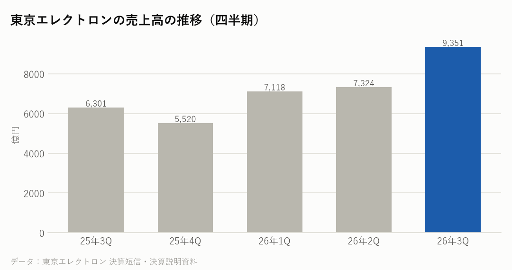
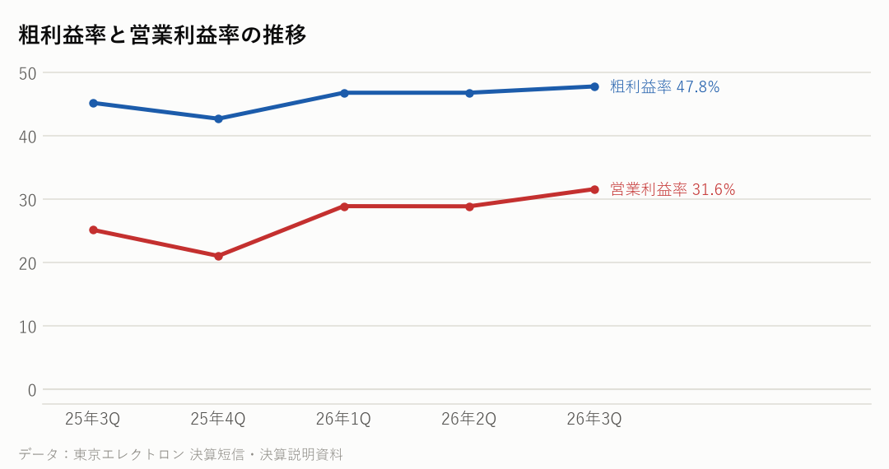

8035｜2026年7〜9月期の決算｜決算発表 2026年10月30日
東京エレクトロンの決算：売上48%増、初の通期予想は営業利益1兆1,690億円
7〜9月期の売上高は前年同期比48%増の9,351億円、営業利益は86%増の2,954億円だった。新しい装置の売上のうち56%がDRAM向けで、メモリー向けの投資が伸びをけん引した。今回初めて通期の予想を公表し、売上高3兆7,000億円、営業利益1兆1,690億円とした。
主な数字（2026年7〜9月期）
| 今回 | 前年同期 | 前年比 | |
|---|---|---|---|
| 売上高 | 9,351億円 | 6,301億円 | +48.4% |
| 営業利益 | 2,954億円 | 1,585億円 | +86.4% |
| 営業利益率 | 31.6% | 25.1% | |
| 純利益 | 2,126億円 | 1,238億円 | +71.7% |
売上の中身（7〜9月期）
| 部門 | 売上 | 前年比 |
|---|---|---|
| 新しい装置（DRAM向け56%・ロジックなど34%・NAND向け10%） | 7,344億円 | ― |
| フィールドソリューション（保守・部品・改造） | 1,910億円 | ― |
| 中国向け（地域別で最大） | 3,399億円 | ― |

会社の見通し（2027年3月期・通期、初めて公表）
| 売上高（通期） | 3兆7,000億円 |
|---|---|
| 営業利益（通期） | 1兆1,690億円 |
| 純利益（通期） | 8,650億円 |
| 売上高（10〜3月の下期） | 2兆325億円 |
- これまで出していなかった通期の予想を初めて公表した。10月〜3月の下期は、売上高2兆325億円、営業利益6,622億円（営業利益率32.6%）の計画。
- 半導体の製造装置の市場（WFE）は、2026年が約1,600億ドル、2027年は2,100億ドル以上になると見ている（会社の見方）。
- 株主への還元として、上限1,500億円の自社株買い（11月〜3月）と、過去最高となる年191円の配当予想を示した。
もうけの力

日本の半導体関連の会社と比べると
各社の直近の四半期。在庫の日数は「在庫が売上原価の何日分か」。
| 会社 | 決算期末 | 売上高 | 前年比 | 粗利益率 | 営業利益率 | 設備投資/売上 | 在庫の日数 |
|---|---|---|---|---|---|---|---|
| 東京エレクトロン | 2026-09 | 9,351億円 | +48.4% | 47.8% | 31.6% | ― | ― |
| アドバンテスト | 2026-09 | 4,777億円 | +81.7% | ― | 55.9% | ― | ― |
| キオクシア | 2026-09 | 24,800億円 | +453.2% | ― | 80.4% | ― | ― |
| イビデン | 2026-09 | 1,393億円 | +42.1% | ― | 23.9% | ― | ― |
| 村田製作所 | 2026-09 | 5,885億円 | +20.9% | ― | 25.1% | ― | ― |
NasdaqWhy の視点：データから読み取れる注目点
決算資料と各社の公式データを並べて読み取れることです。将来を予想するものではありません。
- 7〜9月期の新しい装置の売上7,344億円のうち、DRAM向けが56%、NAND向けが10%で、メモリー向けが約3分の2を占めた。前の四半期はロジック・ファウンドリなど向けが最も大きかった（報道の集計より）。
- 地域別では中国向けが3,399億円で最も多く、売上の約36%。次いで韓国1,907億円、台湾1,804億円。
- 営業利益率は31.6%で、1年前の25.1%から上がった。粗利益率は47.8%。
- メモリーの値上がりで、SK hynix・サムスン・マイクロンなどメモリーの会社の利益が増えており、その設備投資が製造装置の売上につながっている。
- 2027年3月期の研究開発費は3,350億円、設備投資は1,900億円の計画。
次に確認したい決算・予定
- SK hynix・サムスン電子の設備投資の計画：DRAM向けの装置の注文の動き。
- アプライド・マテリアルズの決算（11/12）：同じ製造装置の会社で、メモリー向け・中国向けの動き。
- 東京エレクトロンの次の決算（2027年2月上旬の見込み）：下期の計画どおりに進んでいるか。
関連リンク
出典：東京エレクトロン 決算短信・決算説明会資料（2026年10月30日）
※情報提供のみ。投資判断はご自身でお願いします。※Nasdaq Whyは独立した情報メディアです。Nasdaq, Inc.およびその関連会社とは関係ありません。